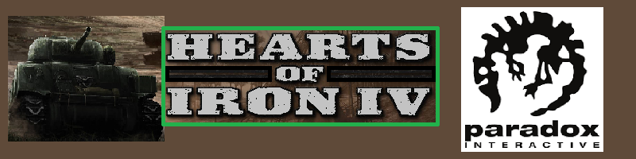

Hearts of Iron IV |
|
Fõmenü |
 |
|
A játék 1936-tól 1948-ig játszható az eddig megalkotott tartalma szerint,
de ezt késõbb bõvíteni szeretnék az 1960-as évekig, mivel sok rajongói panasz érkezett a rendkívül csekély tartalomra,
a játék 2016 júniusi 1.0-s verzióját tekintve. Célunk egyszerû: megnyerni a második világháborút.
Azt, hogy melyik frakció oldalán és melyik nemzettel, az a mi döntésünk. A játék tartalmát az õsrajongók eleinte nagyon sokan kevésnek tartották, illetve túl casual-nek például a Hearts of Iron III-hoz képest, ám ez a "túl casual" mód sok új játékost is megfogott az egyszerûbb kezelõfelület, a nagyobb átláthatóság miatt. A játék fejlesztõi nem sokkal a játék megjelenése után bejelentették, hogy legalább 4 évig folyamatosan gyártják majd a tartalmakat a sorozat új részéhez, mivel õk is tisztában vannak azzal, hogy ami az alapjátékba belekerült, az nem hozza az elvárt mennyiséget. A tartalmak gyártásához hamar felépítettek egy kiadási rendszert, amely abból áll, hogy nagyjából félévente kiadnak egy fizetõs DLC-t (kiegészítõt), és a DLC megjelenésével azonos napon kiadnak egy ingyenes Patch-et (frissítést) is, amelyhez a rá következõ 1-2 hétben majd kiadnak egy-egy Hotfix-et (gyorsjavítást) is. Vannak, akik úgy gondolják, hogy a DLC-k ára igen magas, mivel az alapjáték maga 35 euró, a DLC-k pedig fejenként átlagban súrolják a 15 eurót is. |
|